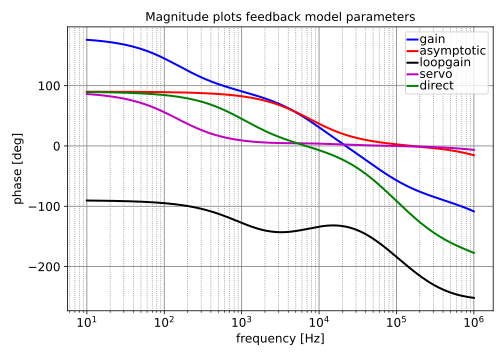
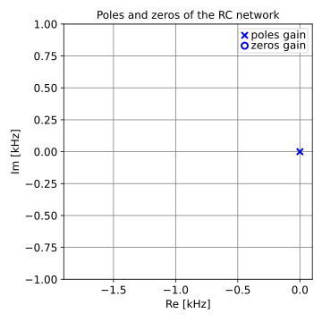

| pole | Re [Hz] | Im [Hz] | Mag [Hz] | Q |
|---|---|---|---|---|
| p1 | $-1.044\cdot 10^{3}$ | $1.044\cdot 10^{3}$ | ||
| p2 | $-61.22\cdot 10^{3}$ | $61.22\cdot 10^{3}$ | ||
| p3 | $-158.3\cdot 10^{3}$ | $158.3\cdot 10^{3}$ | ||
| p4 | $-5.797\cdot 10^{6}$ | $5.797\cdot 10^{6}$ |

Go to A1_controller_single_pmos_optimization_index
SLiCAP: Symbolic Linear Circuit Analysis Program, Version 4.0.10 © 2009-2025 SLiCAP development team
For documentation, examples, support, updates and courses please visit: analog-electronics.tudelft.nl
Last project update: 2026-02-23 13:01:21